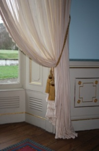
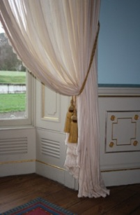

Fitting
We offer a full soft furnishing fitting service. We have fitted curtains, blinds, pelmets, and upholstered walling with some of Ireland's foremost designers, in some of the country’s most elegant and stately homes. We can measure precisely for tracks, poles, curtains and blinds and we also manufacture and upholster pelmets. To discuss how we can meet your fitting needs, please contact us on 087-2562153.
 
